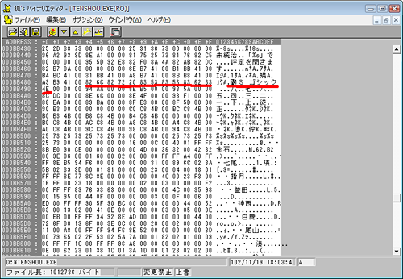
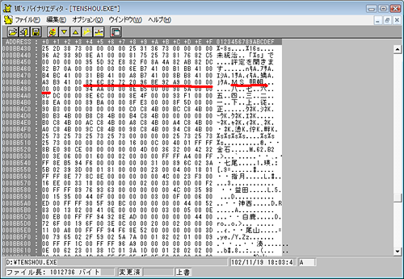

天翔記は、デフォルトでは、｢ＭＳ ゴシック｣のフォントが指定されています。
これではせっかくの戦国の雰囲気が出ません。
ここでは、このフォントを変更する方法の紹介となります。
TSMod設定キットを利用すれば、TSMod.iniを編集することで簡単にフォントを切り替えることが出来ます。
こちらは使えそうなフォントは最初から羅列されています。
また、別フォントを使いたいと思った際は、文字列にてフォント名を指定するだけとなります。
こちらはあまり建設的な方法ではありませんので、お勧めしません。
やむを得ない場合の最終手段と考えましょう。
| ＭＳ ゴシック 82 6C 82 72 20 83 53 83 56 83 62 83 4E  |
| ↓ |
| ＭＳ 明朝 + NULL４つ 82 6C 82 72 20 96 BE 92 A9 00 00 00 00  |
｢16px(=12pt)のビットマップフォント｣を内蔵する(TTFやTTCなどの)フォントであれば、
どのようなフォントでも理論上は入れ替え可能です。
しかし、各文字の縦･横が｢ＭＳ ゴシック｣とほぼ同一であることが求められるために、
現実的な問題としては、美しく見えるフォントは数が少ないと思われます。